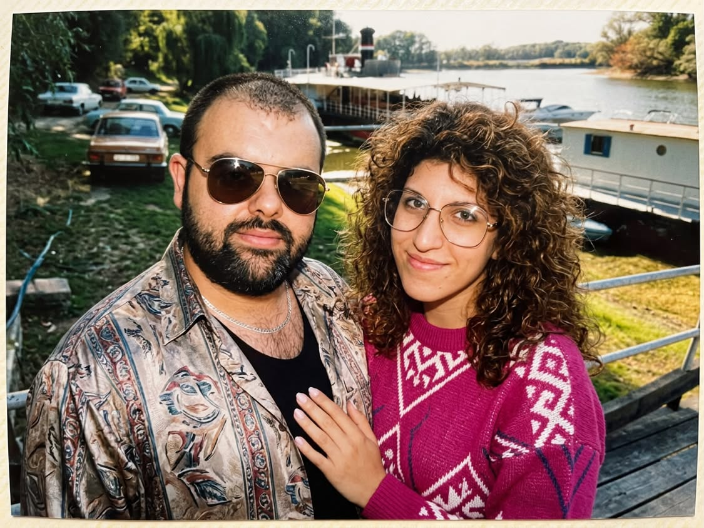

Egy kis meglepetés, csak nektek
Tasi &
Napsi.
Két ember, egy közös történet — és még annyi szép fejezet vár rátok.
Nézzétek meg a videótSok boldogságot kívánunk nektek!

A történet legjobb része most kezdődik.
02 / Egy kisfilm nektek
Most pedig jöhet
a közös mozi.
Helyezkedjetek el kényelmesen.
Ez a nap rólatok szól.
✳ Készítsd be a zsebkendőt, de inkább a popcornt, mert ha sírsz, még fel is pofozlak. Puszi ✳
Ma, holnap, mindig.